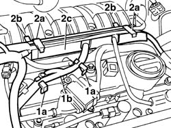
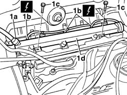

1056B67 R/H FUEL MANIFOLD PIPE, WITH INJECTORS - R + R
- Path
- Procedures > 10 ENGINE > 1056 PETROL INJECTION SYSTEM > 1056B MULTI-POINT INJECTION SYSTEM (MPI) > 1056B67 R/H FUEL MANIFOLD PIPE, WITH INJECTORS - R + R
- Kind
- repair procedure (removal / refitting; the operation number is the code)
- Applies to
- engines: 3.0 24V V6; all production periods
- Interactive page
- https://sloeber94.github.io/elrnDB-fUlss/en/#/179007027
Applies to: engines: 3.0 24V V6; all production periods
 Removing
Removing
 Refitting
Refitting- Disconnect the negative battery terminal.
Description | Connector | |
|---|---|---|
. | Battery | A001B |
Op. 5010B18 CLIMATE CONTROL UNIT AIR INTAKE - R.R.
Op. 5050B34 WINDSCREEN WIPER ARM/S COMPLETE WITH BLADE - R+R
Op. 7210E22 WINDSCREEN BASE TRIM
See in Op. 1088B10
Op. 1016A42 LEFT HAND CYLINDER HEAD IGNITION COIL COVER - R+R
Op. 1048A59 TUBAZIONE DA DEBIMETRO A MANICOTTO CORPO FARFALLATO - S.R.
See in Op. 1068A54
Op. 1072B50 SLEEVES CONNECTING AIR CAPACITY BOX TO INLET MANIFOLD IS - R+R
1. Release the wiring (1b) from the securing clips (1a).
2. Lift up the securing clips (2a), move the wiring and the fuel vapour recovery pipe, then release the securing clips (2b) and remove the wiring retaining duct (2c).

Applies to: engines: 3.0 24V V6; all production periods
Op. 1072B50 SLEEVES CONNECTING AIR CAPACITY BOX TO INLET MANIFOLD IS - R+R
1. Disconnect the rapid connector (1a) and seal the ends of the pipes, disconnect the electrical connections (1b) from the injectors and move the wiring, undo the fixing bolts (1c) and remove the right fuel pipe (1d) complete with injectors.
Description | Connector | |
|---|---|---|
1b | Injector | N070D |
Description | Connector | |
|---|---|---|
1b | Injector | N070E |
Description | Connector | |
|---|---|---|
1b | Injector | N070F |

Applies to: engines: 3.0 24V V6; all production periods
Refitting
Removing- Replace the injector seals.
- Place the (left and right) fuel pipes, complete with injectors, in position.
- Tighten the fixing bolts to the recommended torque.
 | Value - daNm | Fastening | Component | Ø |
|---|---|---|---|---|
. | 0.8 | Bolts | FUEL MANIFOLD PIPE COMPLETE WITH INJECTORS - R and R |
- Connect the electrical connection for the injectors to the fuel pipe.
Description | Connector | |
|---|---|---|
. | Injector | N070D |
Description | Connector | |
|---|---|---|
. | Injector | N070E |
Description | Connector | |
|---|---|---|
. | Injector | N070F |
- Remove the protective plugs and connect the rapid connector for the fuel supply pipe to the fuel manifold pipe.
- Position the wiring retaining duct and attach the securing clips
- Position the wiring and the fuel vapour recovery pipe in the duct and attach the securing clips
- Refit the wiring in the securing clips on the tappet cover.
Op. 1072B50 SLEEVES CONNECTING AIR CAPACITY BOX TO INLET MANIFOLD IS - R+R
See in Op. 1068A54
Op. 1048A59 TUBAZIONE DA DEBIMETRO A MANICOTTO CORPO FARFALLATO - S.R.
Op. 1016A42 LEFT HAND CYLINDER HEAD IGNITION COIL COVER - R+R
See in Op. 1088B10
Op. 7210E22 WINDSCREEN BASE TRIM
Op. 5050B34 WINDSCREEN WIPER ARM/S COMPLETE WITH BLADE - R+R
Op. 5010B18 CLIMATE CONTROL UNIT AIR INTAKE - R.R.
- Connect the negative battery terminal.
Description | Connector | |
|---|---|---|
. | Battery | A001B |
Topics linked from this page (7)
- 0010T21 ENGINE COOLANT - CHECK DENSITY AND CHANGE, IF NECESSARY
- 1016A42 LEFT HAND CYLINDER HEAD IGNITION COIL COVER - R+R
- 1048A59 TUBAZIONE DA DEBIMETRO A MANICOTTO CORPO FARFALLATO - S.R.
- 1072B50 SLEEVES CONNECTING AIR CAPACITY BOX TO INLET MANIFOLD IS - R+R
- 5010B18 CLIMATE CONTROL UNIT AIR INTAKE - R.R.
- 5050B34 WINDSCREEN WIPER ARM/S COMPLETE WITH BLADE - R+R
- 7210E22 WINDSCREEN BASE TRIM